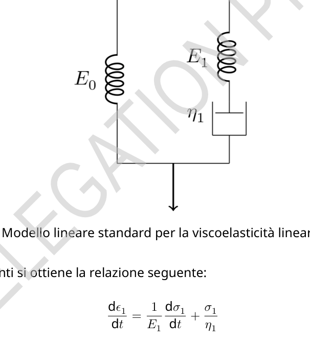
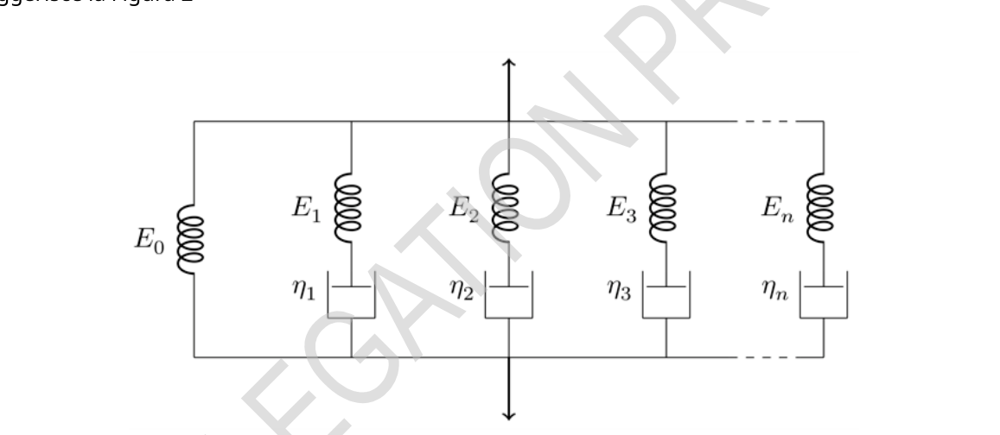
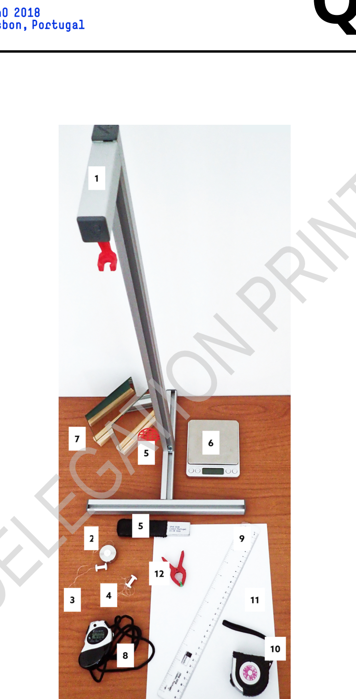
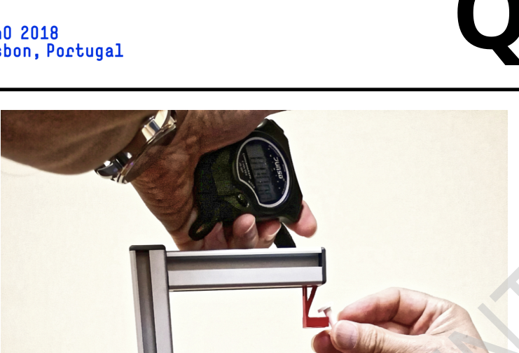
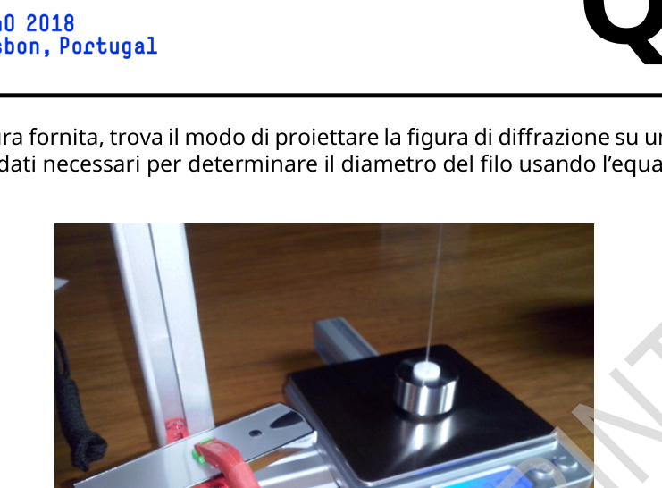
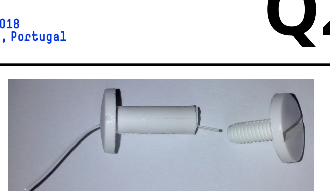

Experiment Q2-1 Italian (Italy) Viscoleasticità di un filo di polimero (10 punti) Attenzione: Il filo non deve essere stirato prima dell’inizio dell’esperimento! Accendi subito la bilancia (il tempo di riscaldamento è circa 10 minuti). Non cambiare il settaggio della bilancia. Introduzione Quando un materiale solido è sottoposto a una forza esterna si deforma. Per forze di piccola intensità la deformazione è proporzionale alla forza (legge di Hooke) ed è reversibile, dunque il materiale ritorna alla sua forma originaria se si rimuove la forza. Per un solido, conviene descrivere il fenomeno usando i concetti di sforzo e deformazione. Lo sforzo σ è definito come il rapporto tra la forza Fe la superficie S su cui agisce, mentre la deformazione εè la variazione relativa di lunghezza: σ= F S e ε= l0 , (1) dove le l0 sono rispettivamente la lunghezza finale e iniziale. Nel range di elasticità, lo sforzo è semplicemente proporzionale alla deformazione: σ= Eε(legge di Hooke) e il fattore di proporzionalità, E, prende il nome di modulo di Young. Il comportamento elastico descritto dalla legge di Hooke è un’approssimazione valida solo per deformazioni sufficientemente piccole. Per deformazioni più grandi le variazioni diventano gradualmente irreversibili e si entra nella zona di plasticità, nella quale i movimenti molecolari cominciano a non essere più vincolati, in maniera simile a quanto accade in un fluido viscoso. In altre parole, sia nel caso di stiramento sia in quello di compressione, oltre il limite di elasticità il materiale diventa asintoticamente fluido. Materiali viscoelastici Alcuni materiali combinano aspetti di un solido elastico e caratteristiche simili a quelle dei fluidi viscosi, e sono perciò chiamati viscoelastici. Nei materiali viscoelastici è dunque ragionevole considerare separatamente il comportamento puramente elastico e il comportamento aggiuntivo viscoso; questo implica che lo sforzo totale σnecessario per produrre una data deformazione εè la somma di un termine puramente elastico σ0 = E0 ε0 e di un termine viscoelastico σ1: σ= σ0 + σ1 (2) Entrambi i termini dello sforzo corrispondono alla stessa deformazione (ε= ε0 = ε1). Però la deformazione ε1 corrispondente al termine viscoelastico viene di solito modellizzata come la somma di una deformazione puramente elastica, εe 1 = σ1/E1, e di una puramente viscosa, εv 1 (entrambe soggette allo stesso sforzo σ1 = σe 1 = σv 1): ε1 = εe 1 + εv 1 (3)
Experiment Q2-2 Italian (Italy) Nel processo puramente viscoso, si assume una relazione lineare tra lo sforzo e la derivata della deformazione rispetto al tempo (analogamente a quanto vale nei fluidi viscosi): σ1 = η1 dεv 1 dt, dove η1 è il coefficiente di viscosità. Questo modello fenomenologico è il cosiddetto modello lineare standard per i solidi, ed è illustrato nella Figura 1: le molle rappresentano i componenti puramente elastici e la tazza il componente puramente viscoso. Figura 1. Modello lineare standard per la viscoelasticità lineare dei solidi. Dalle equazioni precedenti si ottiene la relazione seguente: dε1 dt= 1 E1 dσ1 dt+ σ1 η1 (4) Pertanto, nel modello lineare standard per la viscoelasticità dei solidi, è possibile dimostrare che σ= E0 ε+ τ1(E0 + E1)dε dσ dt (5) dove τ1 = η1/E1. Questa equazione differenziale mostra che la relazione tra sforzo e deformazione non è lineare, e che la deformazione e lo sforzo sono entrambi, in generale, funzioni del tempo. Per ottenere ε(t) è necessario specificare la funzione σ(t) e viceversa. Ci sono due casi speciali di interesse pratico, in cui o dε/dt= 0 o dσ/dt= 0, comunemente noti rispettivamente come condizione di rilassamento dello sforzo e condizione di allungamento lento. Nella condizione di rilassamento dello sforzo si applica al materiale una deformazione improvvisa εche viene mantenuta
Experiment Q2-3 Italian (Italy) costante nel tempo, cosicché dε/dt= 0. In questo caso, la funzione σ(t) dipende quindi solamente dai parametri viscoelastici del materiale e la soluzione dell’equazione (5) è: σ(t) = ε(E0 + ) (6) dove si assume che per t= 0 solo i componenti elastici contribuiscano allo sforzo e quindi σ(t= 0) = ε(E0+E1). Questa soluzione mostra che lo sforzo viscoelastico decade esponenzialmente nel tempo, con una costante di tempo τ1. Processi multiviscoelastici Il modello lineare standard può essere facilmente esteso al caso di molti processi viscoelastici, come suggerisce la Figura 2 Figura 2. Modello generalizzato per processi multiviscoelastici. Dunque, considerando Ncomponenti viscoelastici diversi, σ= σ0 + k σk, k= 1, 2, ⋯, N (7) dove dεk dt= 1 Ek dσk dt+ σk ηke, come sopra, dε0 dt= dεk dt= dε dt. L’equazione (5) si può dunque generalizzare in questo modo: σ= E0ε+ ηt dε k τk dσk dt, k= 1, 2, ⋯, N (8) dove ηt= , e τk= ηk/Ek.
Experiment Q2-4 Italian (Italy) In condizioni di deformazione costante, ciascuno sforzo viscoelastico dovrebbe ancora decadere esponenzialmente nel tempo, σk= si avrebbe quindi la soluzione: σ(t) = ε(E0 + k ) , k= 1, 2, ⋯, N (9) dove si è assunto che per t= 0 solo i componenti elastici contribuiscano allo sforzo totale e dunque σ0 = ε(E0 + ). La risposta viscoelastica che ne risulta è evidentemente non lineare.
Experiment Q2-5 Italian (Italy)
Attrezzatura Per l’esperimento viene fornita la seguente attrezzatura (Figura 3):
- 1 piedistallo, con un sistema di sostegno per posizionare un puntatore laser e un altro supporto superiore per tenere verticalmente il filo stirato con una deformazione costante sopra la bilancia;
- 1 massetta, consistente in un cilindro cavo e una vite per fissare il filo;
- 1 filo lungo di poliuretano termoplastico (TPU) attaccato alla massetta e a un’altra vite usata per appendere il filo al supporto superiore;
- 1 filo TPU corto fissato a una vite singola;
- 1 puntatore laser col relativo supporto;
- 1 bilancia digitale;
- 2 specchi piani;
- 1 cronometro;
- 1 righello;
- 1 metro a nastro metallico;
- 1 foglio di carta A4 da usare come schermo;
- 1 fermaglio a molla per tenere il laser in posizione e per accenderlo;
Experiment Q2-6 Italian (Italy)
Figura 3. Attrezzatura per il problema sperimentale.
Experiment Q2-7 Italian (Italy) Parte A: Misure di rilassamento dello sforzo (1.9 punti) Attenzione: il filo non deve essere stirato prima dell’inizio dell’esperimento! Se per caso il filo viene inavvertitamente stirato, chiedine un altro, ma tieni presente che questo richiederà un po’ di tempo, e di conseguenza avrai meno tempo per il tuo esperimento. Leggi attentamente le indicazioni date nella ”Parte D: Analisi dei dati” prima di iniziare le misure, allo scopo di pianificare il modo in cui condurrai l’esperimento. A.1 Misura la lunghezza del filo tra le teste delle viti quando esso non è teso. Per ottenere la lunghezza totale del filo l0, compresa la lunghezza tra le viti, aggiungi 5 mm per ciascuna vite. Scrivi nel foglio risposte il valore che hai misurato per l0 e la sua incertezza. 0.3pt A.2 Misura il peso totale della massetta, P0, in unità grammi-forza (gf). Ricorda che 1 grammo-forza è la forza corrispondente al peso di una massa di 1 grammo (1 gf = 9.80 N). Scrivi nel foglio risposte il valore misurato, e una stima della sua incertezza. 0.3pt Per osservare sperimentalmente le varie componenti del rilassamento è necessario misurare lo sforzo per un tempo sufficientemente lungo. In questo caso, è sufficiente campionare l’evoluzione dello sforzo per circa 45 minuti. Ora devi effettuare due azioni simultanee: 1 e 2. Leggi attentamente le istruzioni prima di iniziare. Importante: se per qualunque motivo l’esperimento viene interrotto non può essere ripreso. Bisogna ripartire con un altro filo. In questo caso, chiedine uno. Effettua simultaneamente queste due azioni:
- Tenendo la massettina sul piatto della bilancia, tendi il filo sistemando la vite fissata all’estremità sul supporto superiore situato nel piedistallo (Figura 4).
- Contemporaneamente fai partire i
p.2 — Modello lineare standard del solido

p.3 — Modello generalizzato processi multiviscoelastici

p.6 — Attrezzatura per il problema sperimentale

p.8 — Appendi il filo al supporto e inizia misure

p.9 — Accendi il laser usando il fermaglio a molla

p.10 — Montaggio del filo TPU sulla vite di fissaggio

Topic: Elasticity & Materials, Fluid Mechanics, Thermodynamics Metodi: Hooke’s Law, Differential Equations, Experimental Data Analysis Competenze: Experimental Data Analysis, Mathematical Modeling, Graph Linearization Objects: String, Spring, Mirror Fonte: Testo (PDF) — p.1
Experiments Q2-1 Italian (Italy) Viscoelasticity of a polymer wire (10 points) Note: The wire must not be stretched before the start of the experiment! Turn on the balance immediately (heating time is about 10 minutes). Do not change the the balance sheet. The Commission When a solid material is subjected to an external force, it deforms. For small force The deformation is proportional to the force (Hooke’s law) and is reversible, so the material returns It’s going to be in its original form if you remove the force. For a solid, it is appropriate to describe the phenomenon using the concepts of stress and deformation. The stress σ is defined as the ratio of the force Fe to the surface S on which it acts, whereas the deformation ε is the relative change in length: σ= F S e ε= l0 , (1) where l0 is the final and initial length respectively. In the elasticity range, the stress is simply proportional to the deformation: σ=Eε (Hooke’s law) and the proportionality factor, E, It’s called Young’s form. The elastic behaviour described by Hooke’s law is an approximation valid only for sufficiently small deformations. For larger deformations the variations become gradually irreversible and you enter the plasticity zone, where molecular movements begin to be no longer It’s like a viscous fluid. In other words, whether in the case of drawing In both the compression and the elasticity limits, the material becomes asynchronously fluid. Other, of a kind used for the manufacture of textile materials Some materials combine elements of an elastic solid with features similar to those of viscous fluids, And that’s why they’re called viscoelastic. In viscoelastic materials it is therefore reasonable to consider purely elastic behaviour and viscous additional behaviour separately; this implies that the total effort required to The resulting deformation date ε is the sum of a purely elastic term σ0 = E0 ε0 and a Viscoelastic term σ1: σ= σ0 + σ1 (2) Both stress terms correspond to the same deformation (ε= ε0 = ε1). However, the deformation ε1 corresponding to the viscoelastic term is usually modeled as the sum of a a purely elastic deformation, εe 1 = σ1/E1, and of a purely viscous, εv 1 (both subject to the the same stress σ1 = σe 1 = σv 1): ε1 = εe 1 + εv 1 (3)
Experiments Q2-2 Italian (Italy) In the purely viscous process, a linear relationship is assumed between the stress and the deformation derivative relative to time (similar to that in viscous fluids): σ1 = η1 Dεv 1 dt, where η1 is the viscosity coefficient. This phenomenological model is the so-called standard linear model for solids, and is illustrated in the following table: Figure 1: the springs represent the purely elastic components and the cup the purely elastic component It’s very viscous. Figure 1 is shown. Standard linear model for linear viscoelasticity of solids. The following report is obtained from the previous equations: dε1 dt= 1 E1 dσ1 dt+ σ1 η1 (4) Therefore, in the standard linear model for solid viscoelasticity, it is possible to demonstrate that σ= E0 ε+ τ1(E0 + E1)dε dσ dt (5) where τ1 = η1/E1. This differential equation shows that the relationship between stress and deformation is not It’s linear, and that deformation and stress are both, in general, functions of time. To obtain ε(t) the σ(t function must be specified and vice versa. There are two special cases of practical interest, where either dε/dt=0 or dσ/dt=0, commonly known as stress relaxation condition and slow stretching condition respectively. In the condition The material is subjected to a sudden deformation ε which is maintained
Experiments Q2-3 Italian (Italy) It’s constant over time, so dε/dt is equal to 0. In this case, the σ(t) function depends therefore only on the The viscoelastic parameters of the material and the solution to the equation (5) are: σ(t) = ε(E0 + ) (6) where t=0 is assumed to be only elastic components contributing to stress and thus σ(t=0) = ε(E0+E1). This solution shows that viscoelastic stress decreases exponentially over time, with the a time constant τ1. Multi-viscoelastic processes The standard linear model can be easily extended to many viscoelastic processes, such as This is shown in Figure 2. Figure two. Generalised model for multiviscoelastic processes. Therefore, having regard to the different viscoelastic components, σ= σ0 + k σk, k= 1, 2, ⋯, N (7) Where dεk dt= 1 Ek Other dt+ σk ηke, as above, dε0 D = d dt= dε dt. The equation (5) can therefore be generalized as follows: σ= E0ε+ ηt dε k τk Other dt, k= 1, 2, ⋯, N (8) where ηt = , and τk = ηk/Ek.
Experiments Q2-4 Italian (Italy) Under constant deformation, each viscoelastic stress should still decay exponentially over time, σk= would therefore be the solution: σ(t) = ε(E0 + k ) , k= 1, 2, ⋯, N (9) where it is assumed that for t=0 only the elastic components contribute to the total stress and therefore σ0 = ε(E0 + ). The resulting viscoelastic response is obviously nonlinear.
Experiments Q2-5 Italian (Italy)
Equipment The following equipment is provided for the experiment (Figure 3):
- 1 pedestal, with a support system for positioning a laser pointer and other support The upper part to hold the strung wire vertically with a constant deformation above the balance;
- 1 mass, consisting of a cable cylinder and a screw for attaching the wire;
- 1 long wire of thermoplastic polyurethane (TPU) attached to the mass and other screw used for hang the wire from the upper support;
- 1 short TPU thread attached to a single screw;
- 1 laser pointer with the support;
- 1 digital balance sheet;
- 2 flat mirrors;
- 1 timepiece;
- 1 reel;
- 1 metre of metallic tape;
- 1 sheet of A4 paper to be used as a screen;
- 1 spring stop to hold the laser in position and to turn it on;
Experiments Q2-6 Italian (Italy)
Figure 3 is shown. Equipment for the experimental problem.
Experiments Q2-7 Italian (Italy) Part A: Strength relaxation measures (1.9 points) Please note: the wire must not be stretched before the start of the experiment! If the wire is If you are unwittingly stretched, ask for another, but keep in mind that this will require a You’ll have less time for your experiment. Read carefully the instructions in Part D: Data analysis before you start the measures, in order to plan how you will conduct the experiment. A.1 Measure the length of the wire between the heads of the screws when it is not stretched. To obtain the total length of the wire l0, including the length between the screws, add 5 mm for each screw. Write down the value you measured for I0 and its uncertainty. 0.3pt A.2 Measures the total mass weight, P0, in units of gram-force (gf). Remember that 1 gram-force is the force corresponding to the weight of a mass of 1 gram (1 gf = 9.80 N). Write down the measured value on the answer sheet, and an estimate of its uncertainty. 0.3pt The experimental observation of the various relaxation components requires the measurement of the stress. For a long enough time. In this case, it is sufficient to sample the evolution of the effort for about 45 minutes. Now you have to do two simultaneous actions: 1 and 2. Read the instructions carefully before you I’m going to start. Important: if for any reason the experiment is interrupted it cannot be resumed. We have to start with another thread. In that case, ask one. It shall simultaneously carry out the following two actions:
- Holding the weight plate, stretch the wire by fixing the screw fixed at the end The upper support in the pedestal (Figure 4).
- At the same time, start the
The following is the list of the types of solids used:
The following table shows the results of the analysis of the data and the results of the analysis.
The test results shall be presented in accordance with the following formula:
p.8 Hang the wire to the support and start measurements
The laser is switched on using the spring plug.
The following conditions shall apply:
Topic: Elasticity & Materials, Fluid Mechanics, Thermodynamics Metodi: Hooke’s Law, Differential Equations, Experimental Data Analysis Competenze: Experimental Data Analysis, Mathematical Modeling, Graph Linearization Objects: String, Spring, Mirror Fonte: Testo (PDF) — p.1